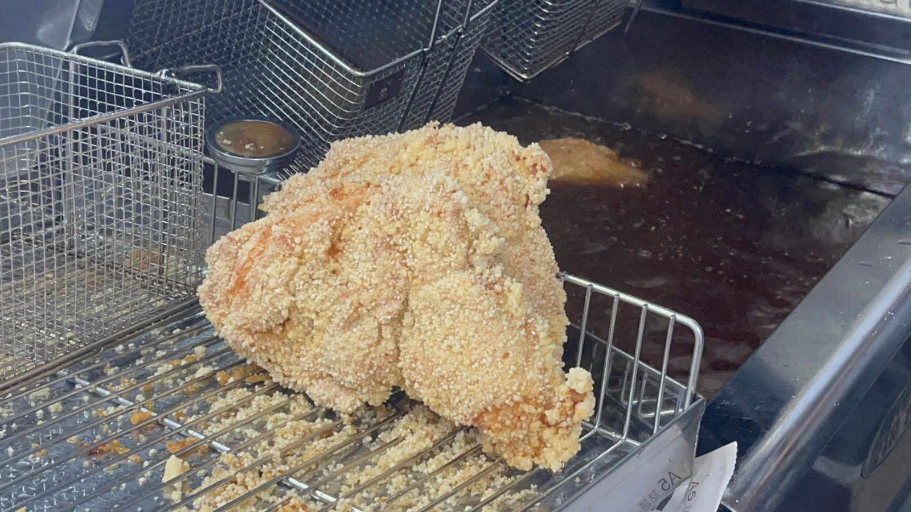
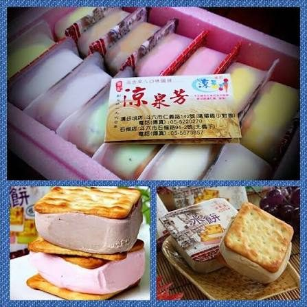
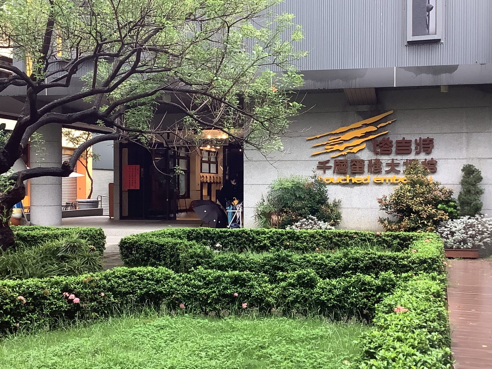
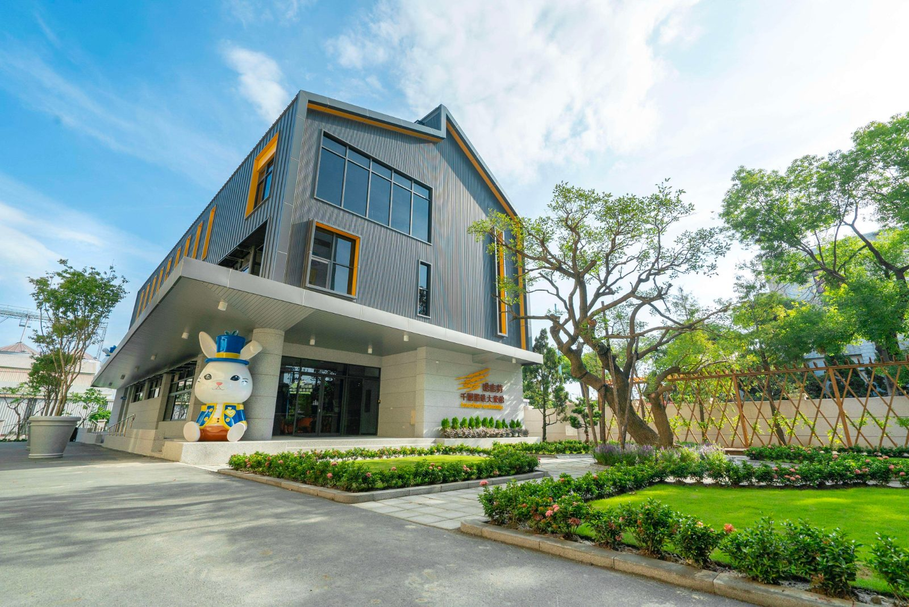
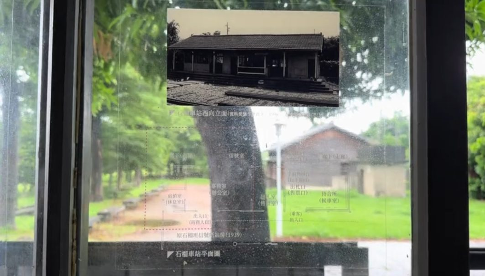

01Pinyu Shiguang Fried Chicken
品御食光炸雞
位於雲林縣斗六市的知名在地人氣炸物宵夜店 該店主打現點現炸 、絕不預炸得烹調原則
製作小組 · 脫單進度0/3探索作品
熟悉的地方，不一樣的故事。
A Little Journey Through Shiliu.
從一碗冰、一層蛋糕，到一座老車站。
跟著同學的照片與中英文介紹，
發現日常裡值得停下腳步的地方。
THE COLLECTION
每一張卡片，都是一段實際走訪的紀錄。

01Pinyu Shiguang Fried Chicken
位於雲林縣斗六市的知名在地人氣炸物宵夜店 該店主打現點現炸 、絕不預炸得烹調原則

02Liang Quan Fang Ice Shop
66年的老店 冰很好吃

03Touched
好吃又好玩

04Target Tourism Factory
一踏進塔吉特千層蛋糕大使館，就被超萌可愛的兔子公爵翻！除了能開箱千層蛋糕的製作秘密，還能親手 DIY 做甜點，成就感爆表！最後嗑一塊皮 Q 餡滑的招牌千層，幸福

05shiliu train station
石榴車站是一座隱身於綠意田園中的百年日式木造無人秘境車站，以其純樸的懷舊風情與曾作為全台鐵路運送石碴的歷史背景而聞名。